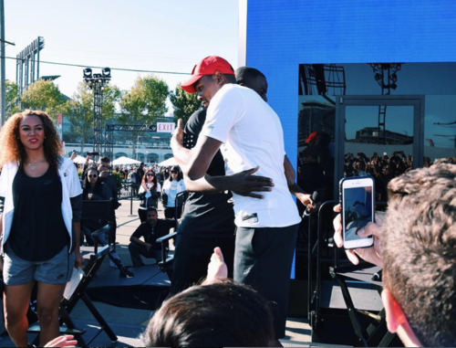

Ethan Lei
Hi there, I'm currently a second year Economics/Business Administration major at the University of California, Riverside. I am originally from San Francisco and I miss the foggy weather that is predominantly around there. My favorite place to see in the city is Ina Coolbrith park. That spot provides a gorgeous view of San Francisco's skyline, while also providing a break of nature in such a concrete jungle. In my leisure time, I love listening to music, playing basketball, and creating clothes. I worked for the past 3 years coaching kids for San Francisco Recreation and Park. I also took up photography as a side hobby and started a business because of it. Photography is very peaceful, in my opinion. It requires skill and patience and a lot of practice. It seemed like moving to Riverside for school would be the equivalent of moving to the middle of the desert. But, I have enjoyed almost every aspect that has been presented to me. The weather is generally warm year round and the events that are held around us are very interesting. This includes many music festivals and landmarks that are worth the visit.
Previously, I have worked with children. I started working when I was 15 and I began in the childcare sector. I worked at a daycare where I was responsible for kids aged 5-10. I was tasked with teaching kids math and English. Besides academic subjects, I would cook for the kids as well when we were short-staffed. I was also a coach at Kezar Stadium and I mainly coached basketball and baseball. I also held an intern position at DreamTeamSF. There, I put in to the world of finance. I had to quickly count bills and do on the spot thinking while dealing with customers. Being an intern there partially showed me what it would be like handling finances and playing with numbers. I learned to work hard and determined because of their owner. I was also very involved with the community since we held many charitable events.
Originally a Biology major, I switched in to Economics/Business Administration because I felt that I could contribute my personality and work ethnic in to something I really enjoyed. I have taken the initiative to become secretary in my club because it would teach me organizational skills. I am currently looking for a position that will help me grow in my respective field. I am quick to adapt to any environment and learn what is needed for the task. I have gained prior knowledge that is vital in the world of economics. In addition, I have been around a lot of communities and I feel that I am able to connect with people of all backgrounds. I feel that my work ethnic is unmatched and I will do my best to contribute to anything needed.
Experience
Intern
• Headed sales for high value items, such as designer clothes and sneakers
• Held food drives and other community events
• Experience with costumer service and commerce
Recreation Leader
• Responsible for coaching kids aged 5-13
• Taught multiple sports, including basketball, baseball, and football.
Photographer
• Conducted interviews and photographed subjects
• Published in multiple articles and paper publications
• Recorded educational content to help promote student education
• Photographed events ranging from formal events to sports games
Education
University of California Riverside
Portfolio
